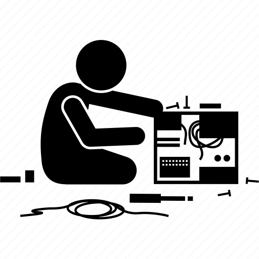
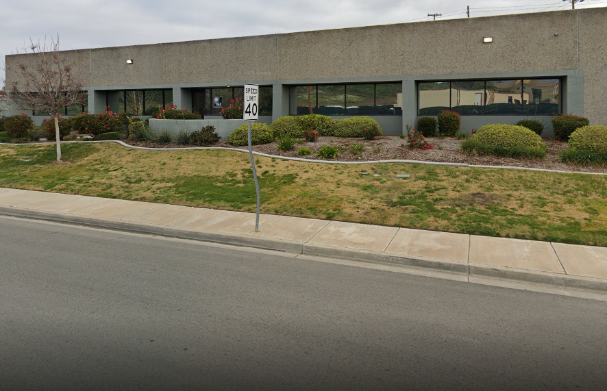
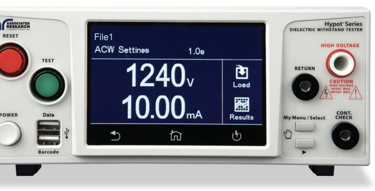
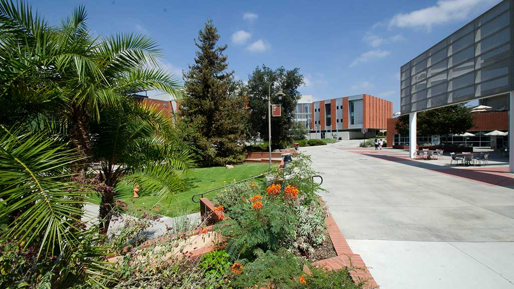

Experience



| Certifications | Credential | |
|---|---|---|
| PCEP – Certified Entry-Level Python Programmer | Link | |
| Linux Foundation Certified IT Associate (LFCA) | Link | |
| Certified Network Security Practitioner (CNSP) | Link | |
| 100 Days of Code: The Complete Python Pro Bootcamp for 2023 | Link | |
| National Cyber League (NCL) Spring 2023 Individual Game | Link | |
| TestOut Network Pro | Link | |
| TestOut PC Pro | Link | |
| - | - | |
| - | - | |
| - | - | |
| - | - | |
| Total Certs: | 7 | |
hi
Work-Experience
-Food Industry-
Branching off from reffing hockey games, I decide to persue the food industry. Starting my journey at the Cheesecake Factory and later BJ's, I learned how to be a leader, managing multiple tasks at once, and keep a level head under stressfull circumstances.
I taught myself how to think on my feet, always asking "what's next?" or how can I help?".
Quicker than I could do my job, I became the one managers would come to for help and
specific tasks. This is also where I found my love for teaching and helping others.
I feel whenever I can do this, it would make my past self proud now that I can teach these
things to empower others.
In 2023, I began searching for internships to better my experience in the technical field.
-Thermal Electronics-
Once I had obtained a decent level of schooling, I applied for internships for the summer of 2023. Luckily, I found a 3 month paid internship with a manufacturing company in Lake Elsinore CA where I became familiar with using and updating their MRP system which tracks their inventory and part specs. After 2 months my internship was extended for any time I desired, and began working my way up.
From pulling and issuing kits to the production floor, I started training for the role of a test technician, testing numerous cable assemblies and
other electronics parts. I became familiar with reading and understanding test procedures, using test equipment such as multimeters, oscilloscopes,
and other test equipment. I then consulted with the production floor to rework any failed equipment, working closely with them until it passed.
I was then moved to the potting lab where I got some hands-on experience with potting connectors and applying conformal coating. During my spare time,
I would brade cables and using automatic wire cutting machines for large orders.
"Life in the kitchen is always eventfull, especially with such a energetic group of people,
but it doesn't get any easier when you know all the stations. After just a year, I was given
the opportunity to become a kicthen manager, and help open a restaurant in Texas for BJ's Brewhouse."


"Although my love for food was worth considering, my passion for technology was unmatched."


"My drive and excitement for engineering was my way of quickly completing assignments while getting ahead enough to persue other means of education."

"I found Udemy which hosted dundreds of online bootcamps which I took advantage of in my
spare time. Coding bootcamps were a huge help in boosting my learning capacity and understanding
complicated concepts. Alongside python, I became familiar with HTML(enough to build this website),
Excel spreadsheets, Linux, TC/IP networking, and computer hardware.
"As for my latest project, I am experimenting with a home network simuation with some switches and
virtual machines. Launching attacks and monitoring network activity for these systems.
School-Experience
-Palomar College-
Since I began high school, I took the remarkable opportunity to access a higher education earlier, and was able to accel myself ahead of my expected graduation date.
Once a eletrical engineering major, I decided to change my major to cyber-security due to
a rough semester. A chellenging experience with math, but a passion for coding brought me to
the doorway of cyber-security. I was in luck when I learned Palomar had an associates program
that I will have completed at the end of spring semester 2024.
-National University-
I was even more fortunate to learn that Palomar was a feeder into National University. A 50% cost reduction on their classes would be awarded once the associates from Palomar is completed. Beginning in fall 2023, I would expect to earn my batchelors in spring 2026.